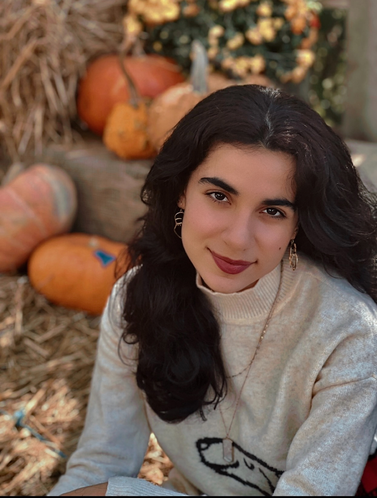

CAREER FOCUS: Moblie App/ Game Developer
Passionate and creative Computer Science student with a minor in Graphic Design. Seeking opportunities to
contribute to impactful projects by combining technical expertise with artistic vision. Strong foundation in
programming, user-focused design, and teamwork with proven ability to balance creativity and problem-solving.
❃ Education ❃
Bachelor of Science in Computer Science | Minor: Graphic Design
Oakland University — Expected Graduation: 2027
❃ Experience ❃
Independent Artist/UI Designer
2020 – Present
- Freelance/Commissioned Work
- Created personalized illustrations and designs for individuals upon request.
- Adapted to a variety of styles based on client preferences.
- Gained experience in time management, communication, and delivering high-quality creative work.
Graphics Editor | The Chariot, Troy High School Newspaper
2020 – 2023
- Designed layouts and visual elements to enhance overall publication quality.
- Collaborated with editorial staff to ensure visuals aligned with written content.
- Maintained and updated the newspaper’s website.
- Developed skills in teamwork, design strategy, and meeting deadlines.
❃ Technical Skills ❃
Programming: JavaScript, HTML, CSS, Java, C, PHP, mobile app development (Android/Java)
Databases & Backend: Server-side development, database design, SQLite, phpMyAdmin
Design Tools: Figma, Adobe Photoshop, Adobe InDesign, Procreate, ZBrush
❃ Projects ❃
Engineering Course Projects
-
InkVoyage (Individual Project): Independently built using Android (Java).
A social media platform for book lovers that connects readers and authors through a feed-based experience
featuring author profiles, interactive posts, and personal reading libraries.
-
Hazoorah: Designed and implemented the core puzzle mechanics and full UI from scratch, with
all original illustrations.
An interactive logic-based riddle game where players solve visual deduction puzzles by arranging characters
and items according to increasingly complex logical rules.
-
Friend Olympics: Developed the front end, backend server logic, database, and core graphics.
A web-based social gaming platform that blends digital games, real-life dares, and score tracking, with game
masters acting as digital referees to ensure fair and customizable gameplay.
- Guess Who, Friends Edition (Individual Project):
A simple web-based Guess Who game customized with real friends as characters, designed for casual, social
play.
-
TicCatToe: Built client- and server-side functionality using JavaScript and Node.js,
collaborating with teammates on HTML, CSS, and graphics.
A multiplayer Tic-Tac-Toe game featuring cat-themed visuals, created to practice client–server communication.
Personal Project
- StudyPal (in progress): Study timer app with a cat-collecting reward system designed to
encourage productivity.